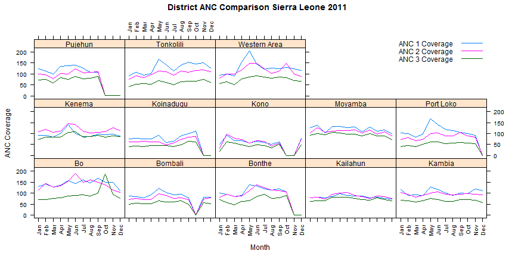

- The combination of two pieces of software into a single system (at least from the user perspective)
- DHIS2 is written in Java, but R is a seperate language.
- Somethings are easy to do in Java, some things are easy to do in R.
- Integration of this type can offer significant advantages, especially in terms of cost and risk mitigation.
Integration of DHIS2 and R
Jason P. Pickering, PhD
Consultant
What do we mean by integration?
What is R?
- R is freely available, open source statistical computing environment.
- R refers to both the computer programming language, as well as the software which can be used to create and run R scripts.
- It is not possible to describe the breadth of what R can do in this lecture, but there are numerous resouces available on the web.
- R is particularly well suited for (complex) statistical analysis and (advanced) visualization.
- Its interactive programming environment encourages ad-hoc programming, but fully supports object-oriented programming structures.
- http://cran.r-project.org/ is the main site.
A simple example
# sample a normal distribution, with a mean of 5 and sd of 2, 100 times
x <- rnorm(100, mean = 5, sd = 2)
x.sorted <- sort(x)
# plot the expected and actual probability density
plot(x.sorted, dnorm(x.sorted, mean = 5, sd = 2), type = "l", ylim = c(0, 0.25),
ylab = "Probability", xlab = "Value", main = "Actual and expected distribution")
lines(density(x), col = 1, lty = 2)

This is just a trivial example of how to simulate data and plot it with R.
What just happened?
- We generated some random variates with
rnorm - We sorted them with
sort - We plotted them with
plot - We added another layer to the plot with
lines - We can save this file to a script, and then run it as a script, or we can type it into the R enviornment line by line.
Why would we want to use R with DHIS2?
- DHIS2 provides a powerful data collection, management and storage system.
- It can perform basic analysis, but lacks advanced analysis capabilities.
- R is free and open source, and runs on multiple platforms (like DHIS2).
- R is a great compliment to DHIS2 to do things like
- Statistical and epidemiological analysis
- Plotting
- Data transformation and importation
- ...
Example 1: Retreiving data with R and ODBC
library(RODBC)
channel <- odbcConnect("dhis2")
sqlTest <- c("SELECT name FROM dataelement ORDER BY name LIMIT 5;")
sqlQuery(channel, sqlTest)
## name
## 1 aaaaaaa
## 2 Acute Flaccid Paralysis (AFP) follow-up
## 3 Acute Flaccid Paralysis (AFP) new
## 4 Acute Flaccid Paralysis (AFP) referrals
## 5 Albendazole given at ANC (2nd trimester)
All we did was connect to the DHIS2 database and retreive some data element names.
Example 2: Analysis of ART data, by gender
- Suppose we have been asked to produce a plot of new ART acceptory by gender.
- We look in the database, and see the data element "ART new clients started on ARV"
- It appears to be disaggregated by age AND gender
- We can write a query and get some data (not displayed here)
startdate categoryoptioncomboname sum
1 2009-01-01 (25-49y, Male) 1
2 2009-02-01 (>49y, Female) 1
3 2009-02-01 (15-24y, Male) 2
4 2009-02-01 (25-49y, Female) 3
5 2009-02-01 (25-49y, Male) 3
- Problem is this data appears to be disaggregated by both age and gender. What should we do?
Lets reaggregate the data by gender
# Lets reaggregate the data by gender First, lets get rid of the age
# groups
arv$gender <- sapply(as.character(arv$categoryoptioncomboname), function(x) sub(")",
"", strsplit(x, ",")[[1]][2]))
# Reaggregate the data by gender
arv.sum <- aggregate(sum ~ gender, data = arv, sum)
# Format the numbers
arv.sum$Percentage <- round(arv.sum$sum/sum(arv.sum$sum) * 100, 2)
arv.sum
## gender sum Percentage
## 1 Female 70 66.04
## 2 Male 36 33.96
We can obviously conclude from the data, that more women are new ARV entrants than men.
Why would we want to write a bunch of code to do this?
- Why not just do the analysis in Excel?
- We could, but what if we need to do it again with new data?
- Why not use the _categorystructure table to get the right category options?
- Might work, but what if we do not have the data in this format?
Basically, R allows you to automate a particular analysis, so that you can write it once, and always reproduce it in the future.
The power to automate particular analsyes is incredibly useful, time-saving, and allows you to show others what you have done.
Example 3: Working with MyDatamart
- Suppose we have been asked to compare Antenatal coverage (1,2,3) by province in Sierra Leone over the last 12 months.
- Suppose further we do not have direct access to the DHIS2 database server, but rather only through MyDatamart (which is quite likely)
# First we need to load some libraries
library("DBI")
library("RSQLite")
library("lattice")
library("latticeExtra")
library("plyr")
Next, we need to connect to the database
dbPath <- "C:\\dhis2\\sl.dmart"
drv <- dbDriver("SQLite")
db <- dbConnect(drv, dbPath)
Example 3: Working with MyDatamart, continued
We can define an SQL query to retrieve data from the MyDatamart database into an R data frame as follows.
# An SQL query which will retreive all indicators at OU2 le
sql <- "SELECT * FROM pivotsource_indicator_ou2_m\nWHERE year = '2011'"
# Execute the query into a new result set
rs <- dbSendQuery(db, sql)
# Put the entire result set into a new data frame
Inds <- fetch(rs, n = -1)
colnames(Inds)
## [1] "orgunit1" "ou1" "orgunit2"
## [4] "ou2" "level" "ou_type"
## [7] "ou_ownership" "indicatorid" "indicator"
## [10] "indshort" "annualized" "child_health"
## [13] "diseases" "reproductive_health" "human_resources"
## [16] "epi_age" "morbidity_age" "stocks"
## [19] "main_indicator_group" "numxfactor" "factor"
## [22] "denominatorvalue" "numeratorvalue" "periodtype"
## [25] "year" "month" "period"
Example 3: Working with MyDatamart, continued
- Looks like we have a lot of columns and indicators, but only a few which we are really interested in.
- Looks like we have a lot of indicators, only a few of which we are really interested in.
- We see from the colnames command that there is an column called "indshort" which looks like it contains some indicator names.
- After we have determined which ones we need (ANC 1, 2, and 3), lets further subset the data so that we only have these.
Example 3: Subset and rearrange the data for ANC
# Grep out the indicators we want
ANC <- Inds[grep("ANC (1|2|3) Coverage", as.factor(Inds$indshort)), c("ou2",
"month", "year", "indshort", "factor", "numeratorvalue", "denominatorvalue")]
# Lets get the actual value Lets reorder the months
MonthOrder <- c("Jan", "Feb", "Mar", "Apr", "May", "Jun", "Jul", "Aug", "Sep",
"Oct", "Nov", "Dec")
ANC$month <- factor(ANC$month, levels = MonthOrder)
ANC <- mutate(ANC, value = factor * numeratorvalue/denominatorvalue)
ANC <- ANC[, c("ou2", "month", "year", "indshort", "value")]
ANC[1:3, ]
## ou2 month year indshort value
## 3 Bo Sep 2011 ANC 2 Coverage 150.9
## 4 Bo Sep 2011 ANC 3 Coverage 102.1
## 25 Bo Sep 2011 ANC 1 Coverage 169.9
Example 3: Making a trellis plot
xyplot(value ~ month | ou2, data = ANC, type = "a", main = "District ANC Comparison Sierra Leone 2011",
groups = indshort, xlab = "Month", ylab = "ANC Coverage", scales = list(x = list(rot = 90)),
key = simpleKey(levels(factor(ANC$indshort)), points = FALSE, lines = TRUE,
corner = c(1, 1)))

Example 3: Conclusion
- Again, you are asking yourself, why write code for all of this?
- Well, we only have to write the code once, and next time someone asks us for the analysis, we just rerun the script.
- We can share the script without friends, so that they can perform the same analysis
- The steps we took to reach the figure are clearly documented in the code.
- As you can see, R is a powerful tool for data manipulation and graphical visualisation.
Example 4: Calculation of some statistics
- R has extremely advanced features for performing statistical analysis.
- Since there are so many packages out there, we do not need to write a lot of code.
- Let's suppose we have been asked for some summary statistics on severe malnutrition in Sierra Leone in 2011.

Example 4: Getting data through the WebAPI
require(RCurl)
require(XML)
# This is a URL endpoint for a report table which we can get from the
# WebAPI.
url <- "http://apps.dhis2.org/dev/dhis-web-reporting/exportTable.action?uid=pxHiOP7MLSD&type=csv&ou=ImspTQPwCqd"
# Lets get the response and we do not need the headers This site has some
# issues with its SSL certificate so lets not verify it.
response <- getURL(url, userpwd = "admin:district", httpauth = 1L, header = FALSE)
# Unquote the data
data <- noquote(response)
# here is the data.
mydata <- read.table(textConnection(data), sep = ",", header = T)
Example 4: Calculation of summary statistics of malnutrition
- Lets calculate the summary statistics
summary(mydata$Severe.malnutrition.rate)
## Min. 1st Qu. Median Mean 3rd Qu. Max.
## 2.70 6.38 7.00 6.91 8.78 10.20
- We have simply requested the data from the WepAPI for a particular report table, and returned it to the
mydataobject. - Pattern : Request data from WebAPI->Read into an R data frame-> Rearrange -> Perform analysis
- R can be used to retreive data directly from the WebAPI
Summary of data extraction and manipluation with R
- Many many more examples are possible
- R can get data from DHIS2 in a number of ways
- Directly from the database
- From MyDatamart
- From the WebAPI
- Once the data has been parsed into R, basically any type of statistical analysis can be performed.
Example 5: Data transformation and importation into DHIS2
| Indicator | Period | Organisation unit | Total |
|---|---|---|---|
| Total Population | 2011 | Western Area | 895525 |
| Total Population | 2011 | Moyamba | 304268 |
| Total Population | 2011 | Bombali | 461678 |
| Total Population | 2011 | Kenema | 574566 |
| Total Population | 2011 | Bonthe | 165924 |
| Total Population | 2011 | Pujehun | 268227 |
| Total Population | 2011 | Kono | 390703 |
| Total Population | 2011 | Port Loko | 532322 |
- Let us suppose we have been asked to project population figures for 2012 and 2013, assuming a growth rate of 2.25% per year.
- We need to import this data into DHIS2, and preferably, do it in such a way so that we do not have to enter the data manually (as there could be many, many data to enter!)
Example 5: This is what we need
| Column | Required | Notes |
| Data element | Yes | Refers to uid by default, can also be name and code based on selected id scheme |
| Period | Yes | In ISO format |
| Org unit | Yes | Refers to uid by default, can also be name and code based on selected id scheme |
| Category option combo | No | Refers to uid |
| Value | No | Data value |
| Stored by | No | Refers to username of user who entered the value |
| Timestamp | No | Date in ISO format |
| Comment | No | Free text comment |
| Follow up | No | true or false |
"dataelelement","period","orgunit","categoryoptioncombo","value","storedby","timestamp","comment","followup" "DUSpd8Jq3M7","201202","gP6hn503KUX","Prlt0C1RF0s","7","bombali","2010-04-17",,"false" "DUSpd8Jq3M7","201202","gP6hn503KUX","V6L425pT3A0","10","bombali","2010-04-17",,"false" "DUSpd8Jq3M7","201202","OjTS752GbZE","V6L425pT3A0","9","bombali","2010-04-06",,"false"
Example 5: First lets get the data from DHIS2
- Same as example 4, but just a different URL
str(mydata)
## 'data.frame': 1167 obs. of 18 variables:
## $ Indicator.ID : int 5808 5808 5808 5808 5808 5808 5808 5808 5808 5808 ...
## $ Organisation.unit.ID : int 278314 260431 260390 543058 222740 247011 233372 193299 222625 268218 ...
## $ Indicator.UID : chr "cI3OTahNbFi" "cI3OTahNbFi" "cI3OTahNbFi" "cI3OTahNbFi" ...
## $ Organisation.unit.UID : chr "OEG9W5mSxjs" "XYKtySBQXaF" "ENVRCxz1RcZ" "nPq4X2mXBx3" ...
## $ Indicator : chr "Total Population" "Total Population" "Total Population" "Total Population" ...
## $ Organisation.unit : chr "Approved School CHP" "Waiima MCHP" "Pejewa MCHP" "Mabang MCHP" ...
## $ Indicator.code : chr "S40" "S40" "S40" "S40" ...
## $ Organisation.unit.code : logi NA NA NA NA NA NA ...
## $ Indicator.description : logi NA NA NA NA NA NA ...
## $ Organisation.unit.description: logi NA NA NA NA NA NA ...
## $ Reporting.month : int 2012 2012 2012 2012 2012 2012 2012 2012 2012 2012 ...
## $ Organisation.unit.parameter : logi NA NA NA NA NA NA ...
## $ Organisation.unit.is.parent : chr "No" "No" "No" "No" ...
## $ X2008 : logi NA NA NA NA NA NA ...
## $ X2009 : num 15132 4846 3256 NA 3481 ...
## $ X2010 : num 15504 4965 3335 NA 3566 ...
## $ X2011 : logi NA NA NA NA NA NA ...
## $ X2012 : logi NA NA NA NA NA NA ...
Example 5: Working up the data
pop <- mydata[, c("Indicator.UID", "Organisation.unit.UID", "X2010")]
colnames(pop) <- c("dataelement", "orgunit", "value")
# Get ride of empty values
pop <- pop[!is.na(pop$value), ]
# Project the populations
pop.2011 <- mutate(pop, period = "2011", value = value * 1.0225)
pop.2012 <- mutate(pop.2011, period = "2012", value = value * 1.0225)
pop.2013 <- mutate(pop.2012, period = "2013", value = value * 1.0225)
pop <- rbind(pop.2011, pop.2012, pop.2013)
# Round off everything
pop$value <- round(pop$value, 0)
# We need some new columns
pop$categoryoptioncombo <- "P3p47Zcxn1C"
pop$storedby <- "admin"
pop$timestamp <- format(Sys.time(), "%Y-%m-%dT%H:%M:%S+0000")
pop$comment <- "Import from R"
pop$followup <- "false"
pop <- pop[, c("dataelement", "period", "orgunit", "categoryoptioncombo", "value",
"storedby", "timestamp", "comment", "followup")]
write.csv(pop, file = "population.csv", row.names = FALSE)
Example 5: Summary
|

|
Is this really integration?
- Well, it could be argued that it is not
- Integration is very broad, from very loose to much more tight.
- Other approaches offer tigher integration
- Rscript